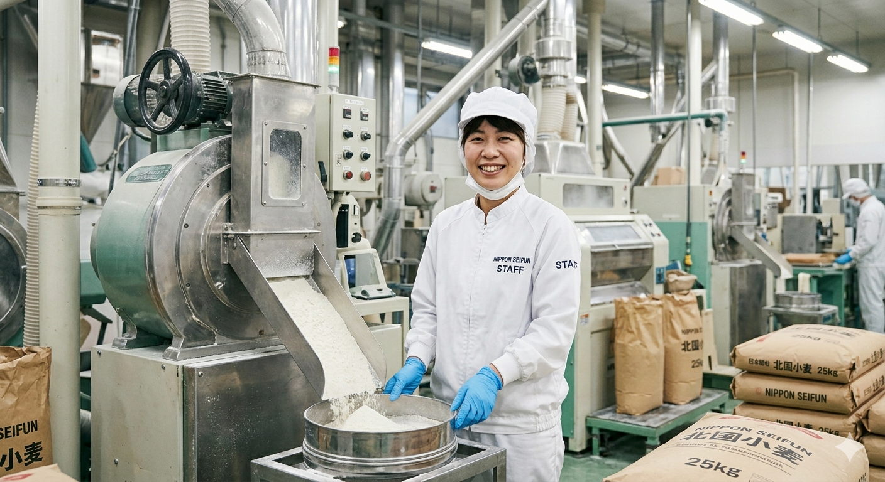
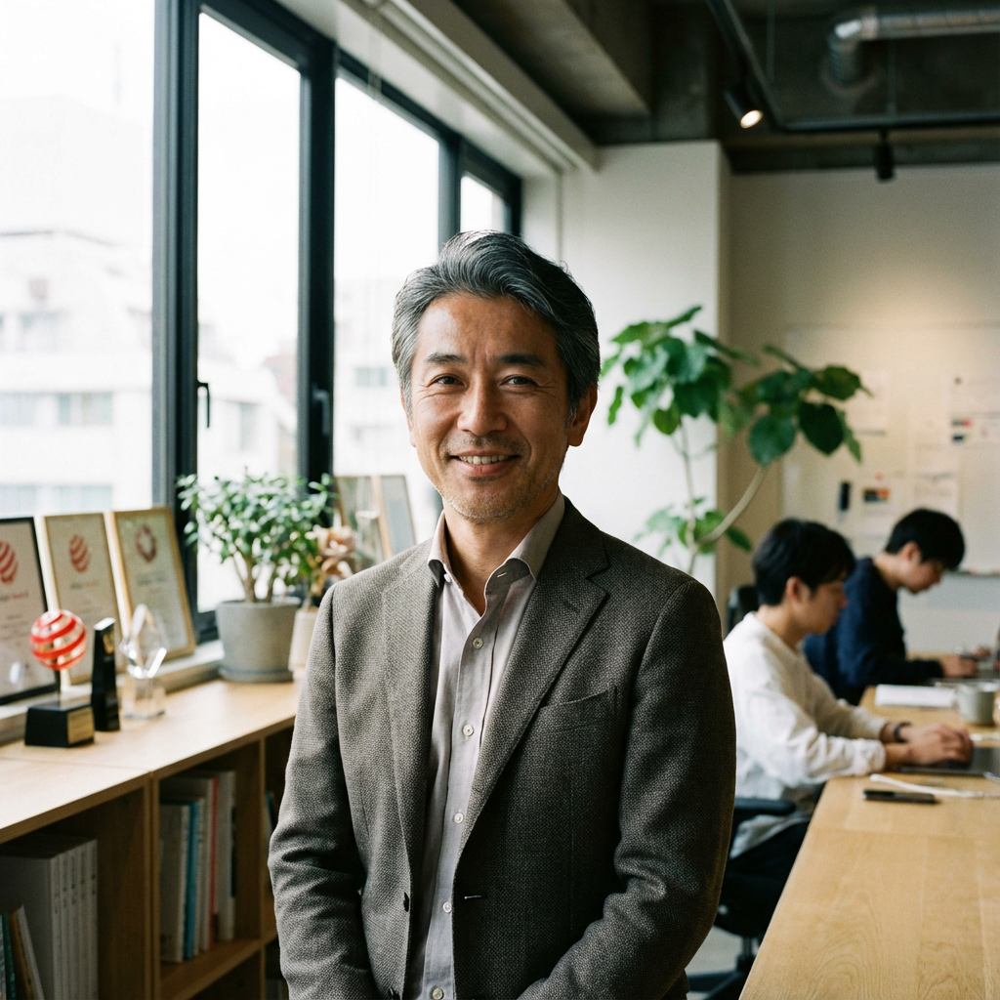

OUR VALUES
食品部門
小麦粉・麺類・スープ・菓子原料の製造販売。外国産・国内産小麦を種類別に製粉し、ユーザーニーズに応じてブレンド。必要量を迅速に小ロットでも提供できる体制を完備しています。
製煎部門
麦茶・煎麦・こうせん・きな粉等の製造販売。伝統的な製法と最新の品質管理を融合させ、安全で香り高い製品をお届けします。
飼料部門
ふすま・圧ぺん飼料の製造販売。製粉工程で生まれる副産物を有効活用し、高品質な飼料として畜産業界を支えています。
国際基準の品質管理と科学的アプローチ
ISO22000取得、FSSC22000取得、AIB監査での「Excellent」達成など、国際的に認められた高い品質管理体制を敷いています。原料小麦の分析や物性試験など、科学的なアプローチによる徹底した品質チェックが私たちの誇りです。

老舗＝アナログというイメージを覆す、コンピュータ制御の現代の職人技。
READ INTERVIEW
音、振動、手触り。五感を研ぎ澄ませて気づく、プロとしての感覚。
READ INTERVIEW
食の安全に対してどこまでも実直な集団。新しい視点で追求し続けたい。
READ INTERVIEW技術職
製造ラインの改善やリニューアル、IT導入、DX推進、品質管理などに携わります。最初は製造現場のオペレーションを通じラインを把握することからスタートします。
製造職
製造ラインのオペレーション、小改善、原料管理を担当します。業務習熟後は、小改善から徐々に高度な改善へとステップアップしていただきます。
営業職
既存顧客へのルートセールスがベースですが、近年はマーケティング活動にも注力し始めており、新たな価値提案を行っていただきます。
パート社員（製造ライン）
小麦粉包装ラインの運転、乾麺ギフトの詰め合わせなど。9時〜16時勤務が基本ですが、日数や時間は相談に応じます。
本サイトのエントリーフォームよりご応募ください。
お送りいただいた内容をもとに選考を行います。
お互いを知る場として、ざっくばらんにお話ししましょう。
一緒に働ける日を楽しみにしています。